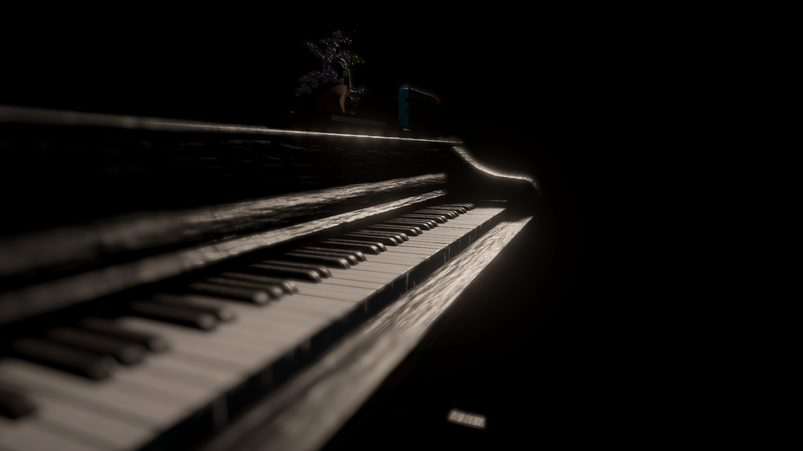
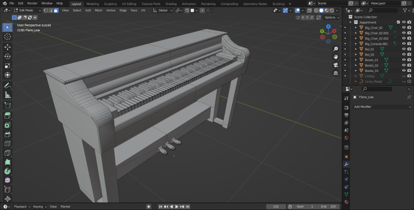
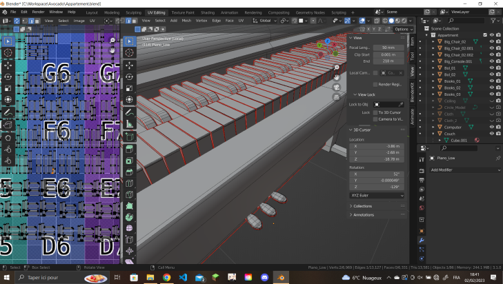
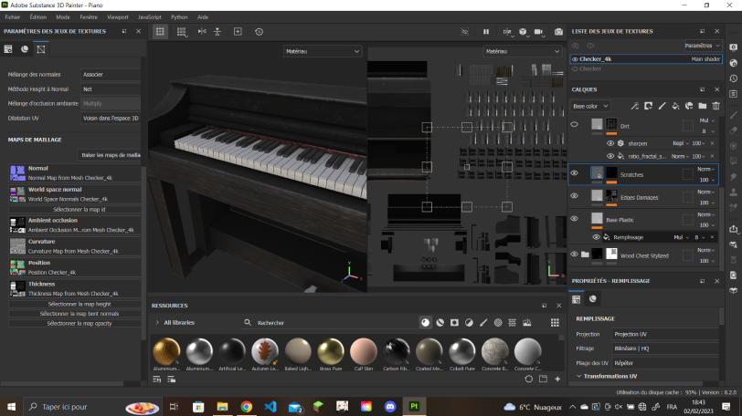
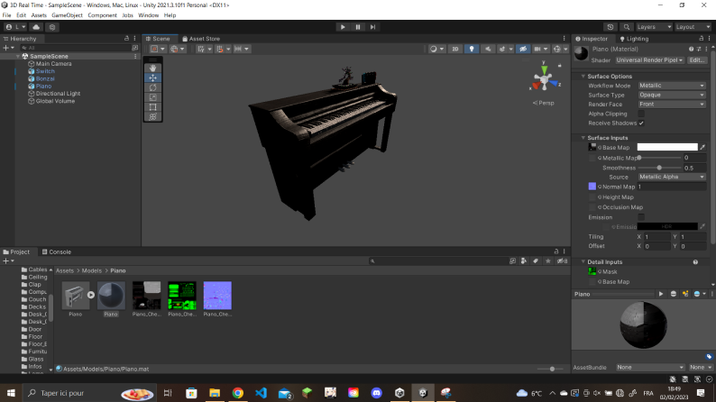

 3D IN REAL TIME
I made a double diploma with the ENSAM (Ecole National Supérieure des Arts & Métiers), where I learned to create 3D objects. Starting from a sketch to modelisation, UV Mapping, rigging, texturing, importation in Unity and development, I learned the processus of the creation of 3D environement.

MODELISATION
From a 2d sketch, modelisation is used to represent it in a 3D space. You ca use different software for modeling / sculpting, but this piano was modeled on Blender.
I learned Blender by myself until my double diploma, where I could learn how to optimize the process.
UV_Mapping
UV mapping is an essential step in creating texture for 3D object. After affecting the pivot points (origins) on the piano, I strated its UV mapping.
The objectif is to cut the object to "flatten" it in order to put a texture on it (Because the texture are in 2D).


TEXTURING
After doing the UV mapping of the paino, we can start applying textures to it. For that we can do them ourselves by creating/drawing an image on photoshop for example and make a color base, a normal map, etc, or we can do it directly in Blender.
For the piano I chosed to use Substance Painter from the Adobe suite. It allows me to Bake my maps (normal map, roughness, occlusion, etc) and that is very powerfull. For example, the reflection of the light is know by the software and so, the colors will be lighten at some points.
IMPORTATION
And then, I can export the texture and the 3D model, importe it in Unity (Here is a URP project) to use it in various experience (Like VR). Once the piano is in Unity, I can create a material and apply it.
I can create a VR scene and put the piano at the center of the room. Apply a script for each touch and play a note when pressed.
